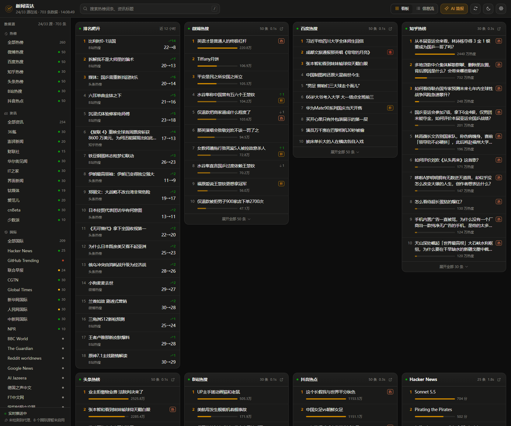
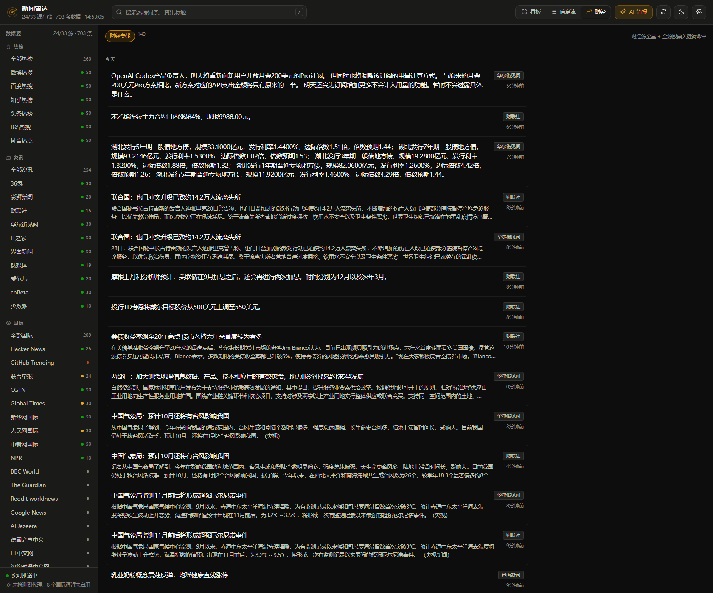
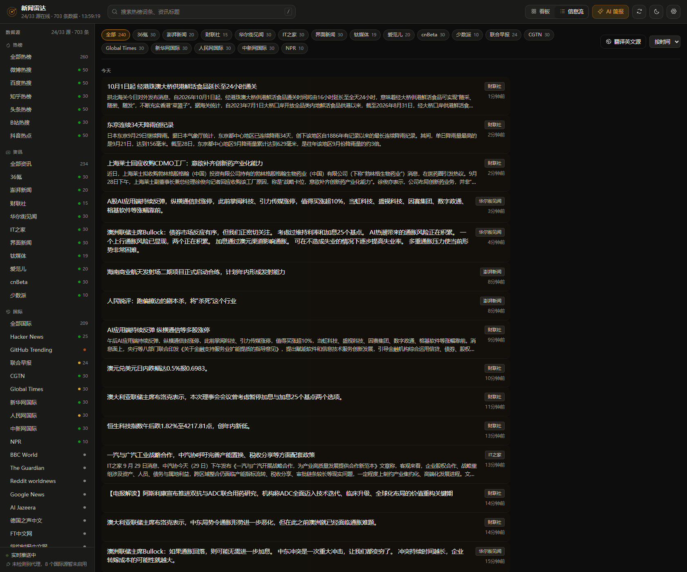
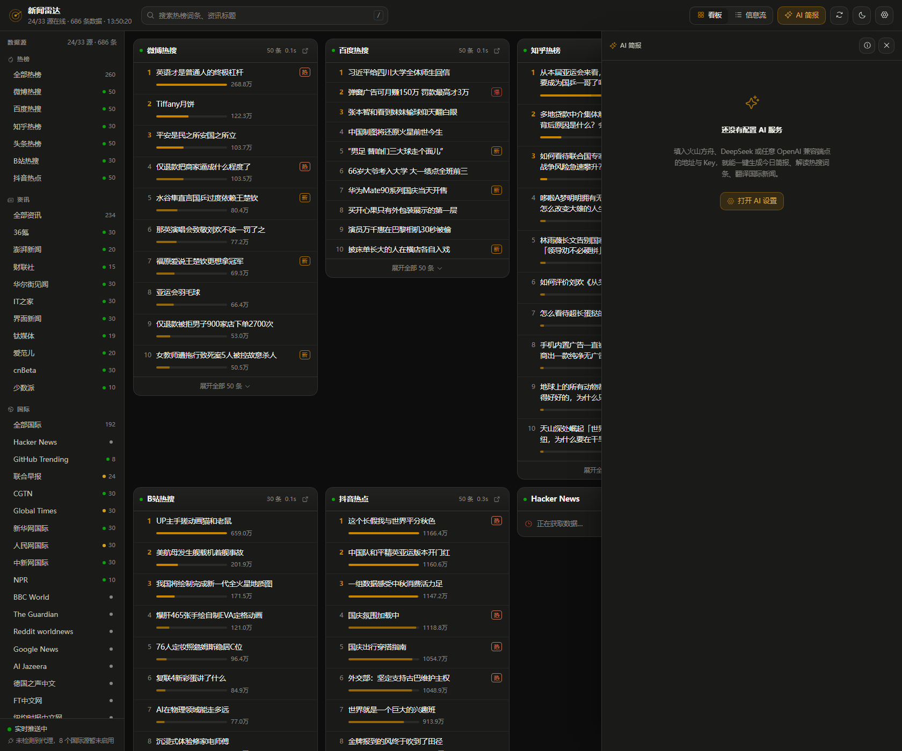
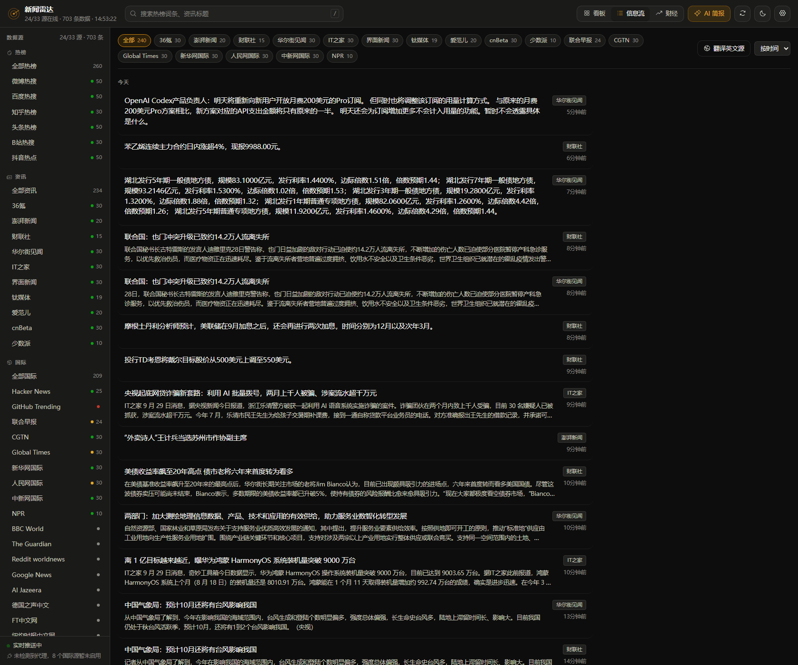
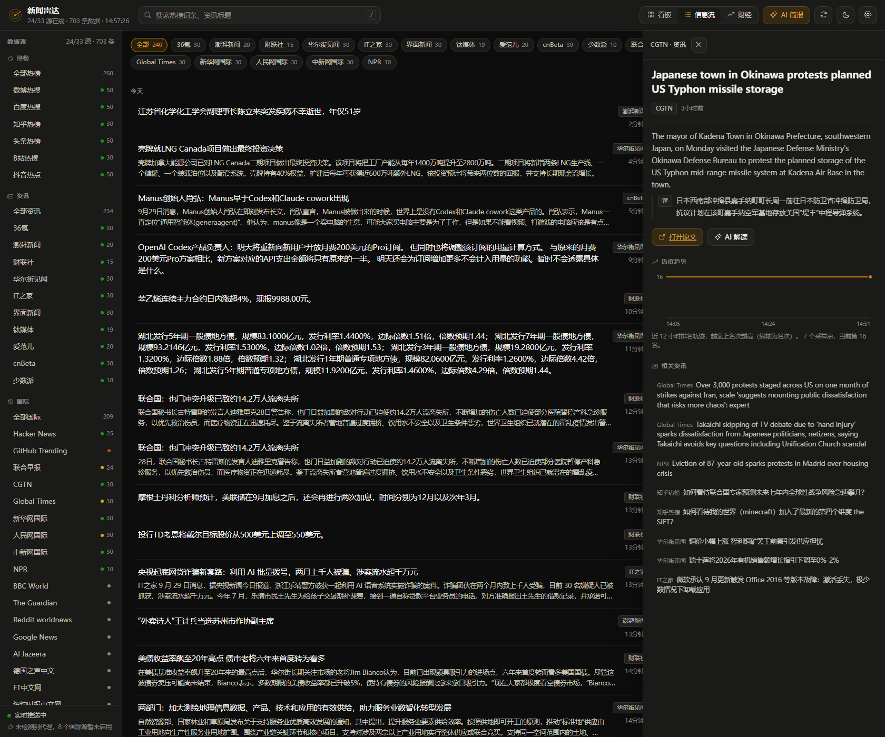
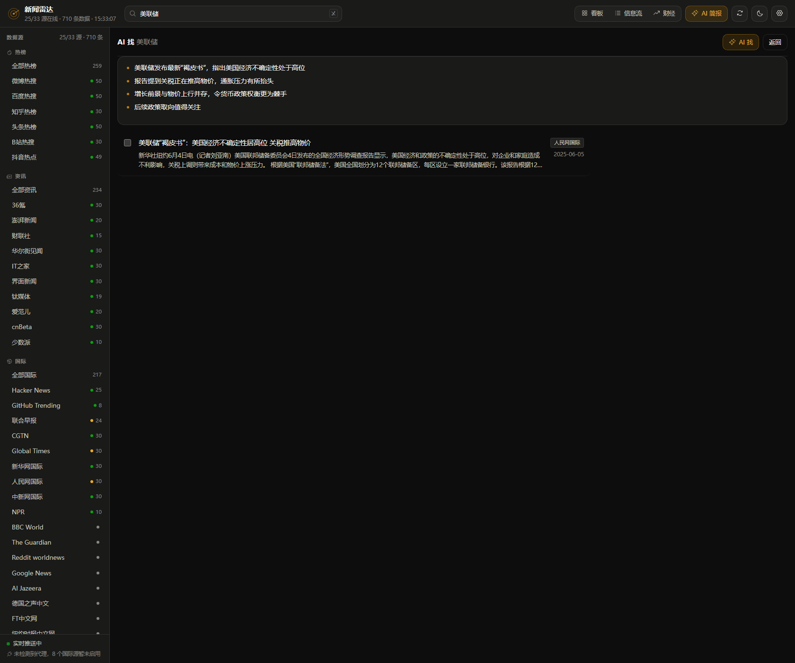
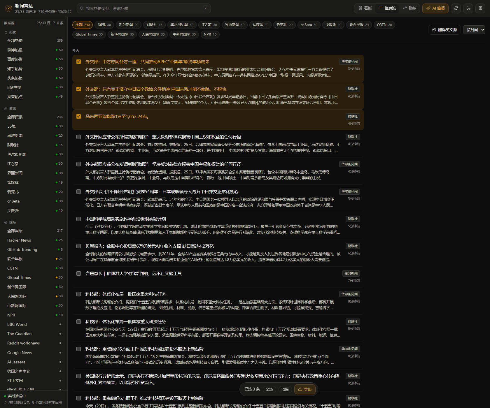
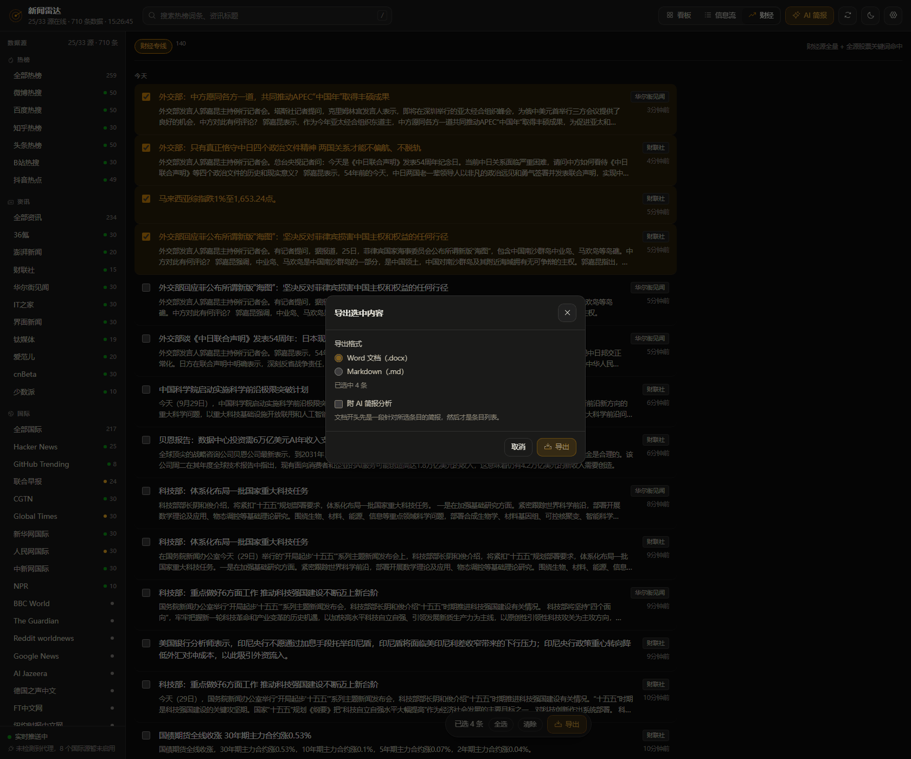

View 01 · 看板
六大热榜并排，升降一眼看尽。
微博 / 百度 / 知乎 / 头条 / B站 / 抖音，热度条 + 排名变化，90 秒一轮。
Local-first news terminal · 本地优先 · 实时聚合
33 个数据源 · 四大视图 · WebSocket 实时推送
微博、百度、知乎、头条、B站、抖音，加上 36氪、财联社、澎湃、Hacker News、CGTN、NPR…… 三十三个源按各自的节奏轮询，新内容不等你刷新，自己走到屏幕上。 没有云端，没有账号，一切运行在 127.0.0.1:8850。

The four views · 四大视图
看板、信息流、财经、搜索 —— 数字键 1 / 2 / 3 一键切换，斜杠唤起搜索框。 每一条都点得开：热度趋势曲线、跨源相关资讯、AI 解读。
View 01 · 看板
微博 / 百度 / 知乎 / 头条 / B站 / 抖音，热度条 + 排名变化，90 秒一轮。
View 02 · 信息流
10 国内 + 17 国际源。滚到顶部才插入新条目，不打断你在读的东西。
Bonus · 详情抽屉
热度趋势曲线 / 跨源相关资讯 / AI 解读，点标题开，Esc 关。
View 03 · 财经
6 个财经源全量 + 全源 18 个股票词命中，热榜里的股票话题也进来。
View 04 · 搜索
切词打分，多词主题也命中；「AI 找」的列表每条都点得开。

Filters · 筛选
信息流与财经的时间过滤在服务端做，而且发生在条数截断之前 —— 否则「近 7 天」会先被 limit 吃掉。 搜索与 AI 找在本地过滤，切档零请求。时间档是全站共享的：在信息流切到近 3 天，切去财经会自动跟随。
01 · 时间四档
时间档激活时，没有发布时间的条目会被排除 —— 不拿抓取时间冒充发布时间， 否则这些条目会集体插到最前面把信息流刷屏。
02 · 来源筛选
每个视图一条 chips，列出当前数据里实际出现的源和条数。三个视图各自独立， 互不干扰 —— 信息流那边选的和财经这边选的是两回事。

AI · Five capabilities
Key 只写在本机 data/settings.json，界面里只回显掩码，不出本机。 简报、解读、找新闻是流式输出边生成边渲染；翻译与导出简报走非流式接口， 因为结果要按原文回填到对应条目上，流式 Markdown 对不上号。
Cap 01 · AI 简报
今日焦点 / 国内热点 / 国际动向 / 值得关注，同一事件的重复条目会合并。

Cap 02 · 自动翻译
不需要点按钮。打开英文条目时摘要也自动翻译，结果三层缓存，重复内容不再消耗配额。

Cap 03 · AI 解读
会带上跨源的相关条目当上下文，解释来龙去脉而不是复述标题。

Cap 04 · AI 找
所以列表 100% 可靠、每条都点得开；没配 Key 或模型报错时，列表照常显示。

Cap 05 · 导出简报
300 字以内、要点式，附在导出文档的开头，后面才是条目列表。
Export · 多选导出
三个列表都能勾选，选中态跨视图累计 —— 信息流勾两条、财经勾两条、搜索再勾两条，一起导出。 切视图、实时推送重渲染、手动刷新都不会丢，因为它存在状态里而不是 DOM 上。上限 200 条。
Workflow
勾选
三个列表行首都有复选框，点框只勾选，点标题才开详情。
跨视图累计
底部浮出「已选 N 条 · 全选 · 清除 · 导出」。
选格式
Word (.docx) 或 Markdown (.md)，中文文件名。
附 AI 简报
可选。针对你选的这批条目写，不是全源摘要。


Edge cases
AI 简报生成失败时，文档照常下载，只是不含简报段，界面会明确告诉你。 没配 Key 时这个选项直接禁用，并给一个跳到 AI 设置的入口 —— 而不是让你点了才发现不行。
By the numbers · 数字
33
数据源 · 6 热榜 + 10 国内 + 17 国际
90S
热榜轮询 · 国内 240S · 国际 300S
15MIN
SQLite 快照 · 趋势曲线来源
3天
快照保留 · 滚动清理
0
手动刷新 · WebSocket 直推
100%
本地 · Key 不出本机
How it flows
sources/*.py → fetcher.py → hub.py（内存态）→ WebSocket → 前端
store.py（SQLite 快照 · 每 15 分钟 · 保留 3 天）
打开应用，30 秒进入雷达。
项目主页